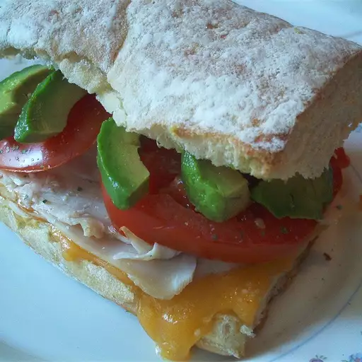

Turkey Sandwich

Description
A classic turkey sandwich with vegetables and turkey deli-cut slices. You can never go wrong with the classics!
Ingredients
- 2 slices whole wheat bread, toasted (Optional)
- 1 tablespoon mayonnaise
- 2 teaspoons Dijon-style prepared mustard
- 3 slices smoked turkey breast
- 2 tablespoons guacamole
- ½ cup mixed salad greens
- ¼ cup bean sprouts
- ¼ avocado - peeled, pitted and sliced
- 3 ounces Colby-Monterey Jack cheese, sliced
- 2 slices tomato
Steps
- Spread mayonnaise on one slice of toast, then spread mustard on the other.
- Arrange the sliced turkey on one side.
- Spread guacamole over the turkey.
- Pile on the salad greens, bean sprouts, avocado and cheese.
- Finish with tomato slices, then place the remaining slice of toast on top.